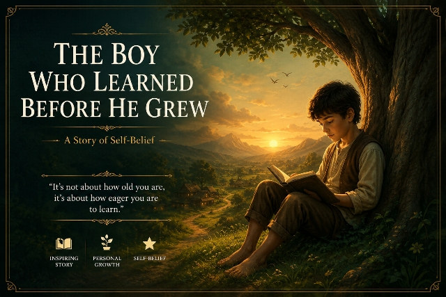

A Story About Character and Everyday Habits
A quiet Kyoto morning, a school where children serve and clean for themselves, and a lost wallet that tests a boy's character — a story about the small habits that shape an extraordinary life.